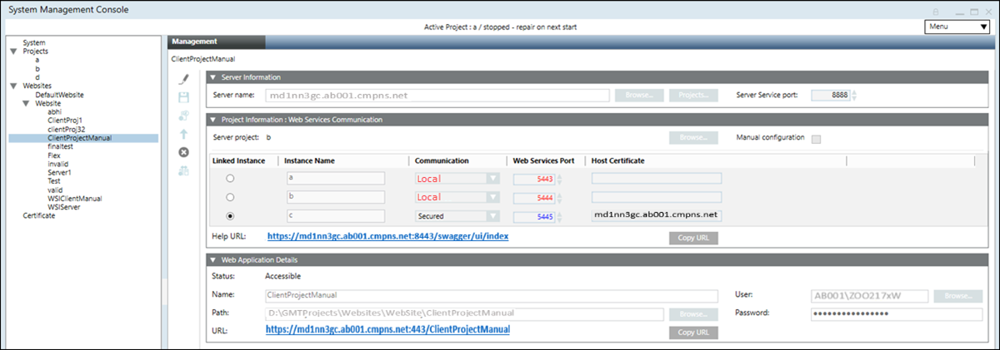

Create a Web Services Application on a Remote Web Server (IIS) in Automatic Mode
- You have ensured that there is enough disk space for web services application creation, else you must free some disk space. In Additional Installer Procedures, see Use Cleanup to Reduce Data Volume on the Hard Drive.
- At least one website is created and available under Websites in the SMC tree.
- In the SMC tree, select Websites > [website].
- Click Create Web Services Application
 .
. - In the Server Information expander, do the following:
a. Type the full computer name of the Server, for example ABCXY022PC.dom01.company.net
or click Browse and select the server name using the Workstation Picker dialog box.
b. If required, edit the server service port to match the server service port number on the server. The default port number is 8888.
c. Click Projects to browse for and select a project on the configured Server using the Project Information dialog box. - In the Project Information: Web Services Communication expander, the Server project name is configured according to the selected Server project.
- (Optional and not required when you have selected the server project using Projects) In the Project Information: Web Services Communication expander, click Browse to select a Server project using Project Information dialog box.
- In the Project Information: Web Services Communication expander, the communication type and the Web Services Port are configured according to the Server project selected. If the Communication mode of the selected server project is Local, then the web application, is also created with the Local mode. In this case, you cannot work with the Windows App Client. Therefore, you have to manually edit the Communication mode of the server project to Secured and then Align with Server to update the Communication mode of the web application to Secured.
- The available WSI instances for the selected Server project display.
- In the Web Application Details expander, proceed as follows:
a. Type a unique name for the web services application.
b. Use the default path to store the web services application files [installation drive:]\[installation folder]\[Websites]\[Website name]. Otherwise, click Browse to modify the path.
c. Use the default website user or click Browse to select a user using the Select User dialog box. The web services application user must be a member of the IIS_IUSRS group.
d. Type the password of the selected user. - Click Save
 .
. - A message displays.
- Click OK.
- A new web services application node is created as child of the selected website under Websites in the SMC tree. A corresponding child node is created in IIS.
- A Copy URL button displays.


NOTE:
With Version 5.0, the Unsecured communication type is replaced with Local. It is recommended to configure the communication of all remote web applications to Secured as Unsecured communication will not work.
Tips
- The host certificate's subject name configured for the WSI instance on a Server project must match the server name on the Client/FEP. Otherwise, a message displays informing you about the inconsistency and you cannot work with Windows App clients.
- The root certificate (.cer file) of the host certificate or the self-signed certificate provided in the Host certificate field, in the Communication Security expander of the selected Server project, is available in the Trusted Root Certification Authorities (TRCA) store of the Local machine certificates store on the Server computer as well as on the Client/FEP machine hosting the web server (IIS).
- If the root certificate is missing on the Server during a web services application creation/editing on remote web server (IIS), a message displays informing you that the host certificate is not valid. However, if the root certificate of the host certificate is not available in TRCA on the Server, but is available in the TRCA on Client or FEP hosting the web server (IIS), the web services application URL works.
- The web services application can be different than the website user. You must ensure that the port of the linked Server project’s WSI instance, is accessible from the remote web server (IIS) hosted on Client or FEP station.